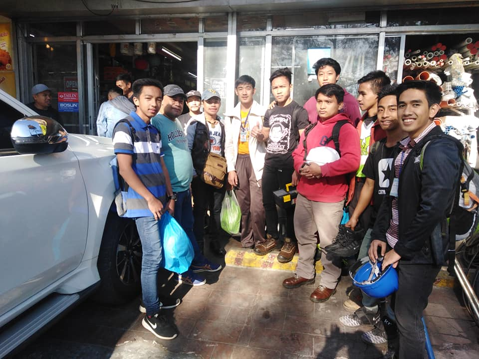
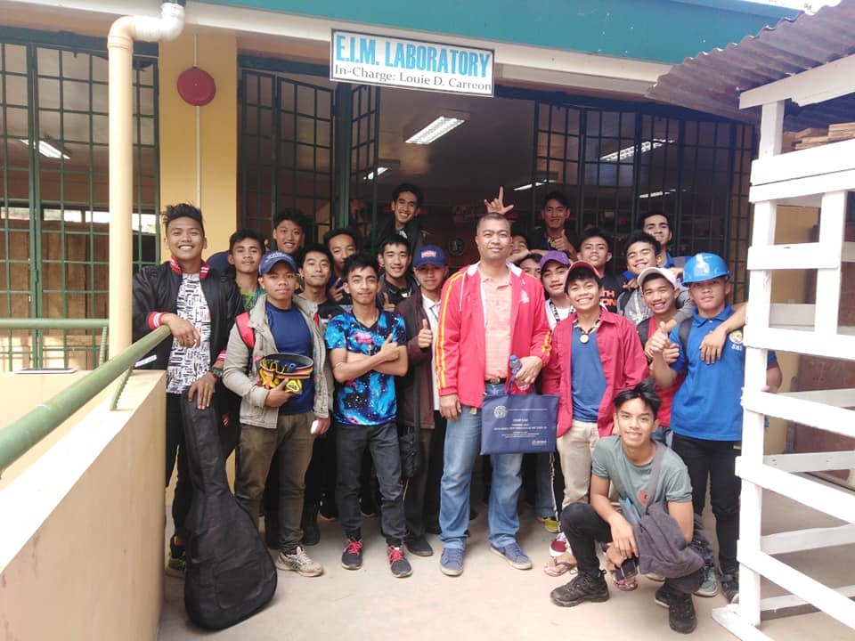

EIM
Electrical Installation And Maintenance The program combines theory with laboratory activities as an effective means of developing the skills essential to the electrical trade.

Louie Carreon
Sir Louie is a certified Tesda proctor for EIM he is a senior proctor in Tesda some of the students graduated under him.
 SECOND BATCH OF EIM
This are the 2nd batch of Students graduated in EIM Under Sir Louie Carreon